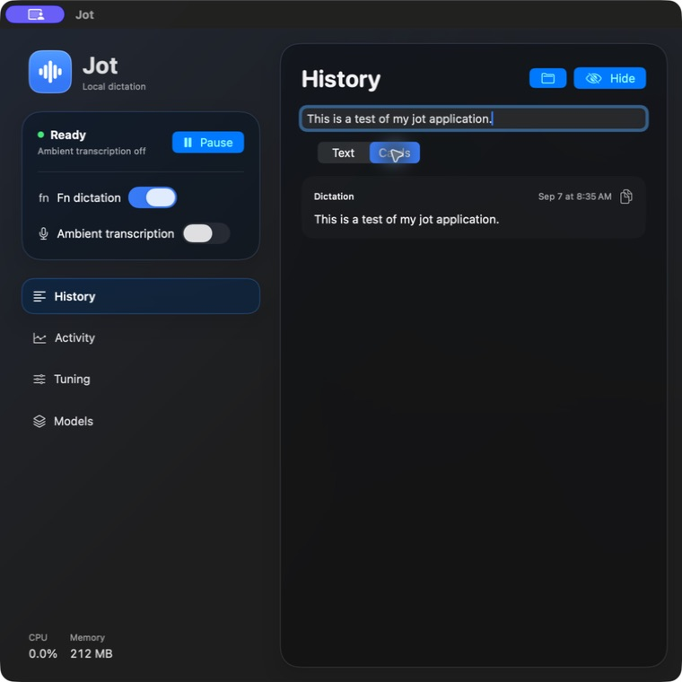
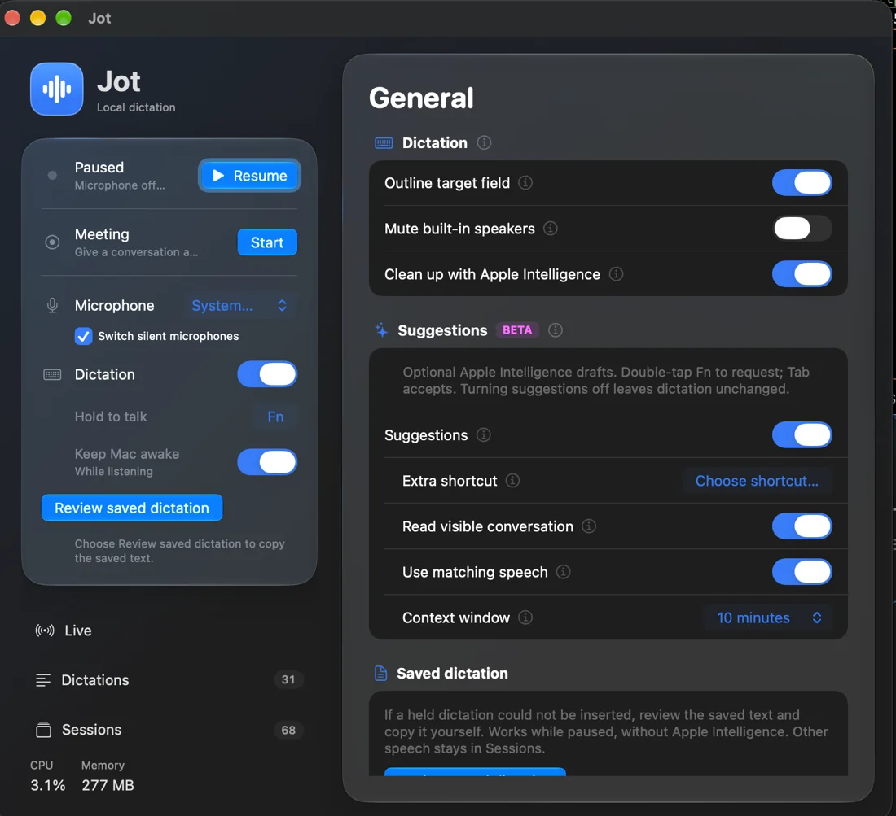

Listens when you want
Resume, and Jot keeps a searchable transcript of what it hears. Pause stops the microphone. Start a meeting to name it; end it to save Markdown to your Documents folder.
Jot is dictation and transcription for your Mac that never sends your voice anywhere. Hold Fn in any app, talk, let go, and your words are in the field.
Free and open source · Apple silicon · macOS 14 or later · Prerelease

Speech recognition runs locally with open models through FluidAudio. No account, no cloud transcription.
Release Fn and Jot inserts the text where your cursor is. It never presses Return, and it skips password fields.
If the field moved or the insert can't be confirmed, the dictation is saved for you to review and copy.
Resume, and Jot keeps a searchable transcript of what it hears. Pause stops the microphone. Start a meeting to name it; end it to save Markdown to your Documents folder.
After a session, a speaker pass groups rows by voice. Name a speaker once and Jot recognizes that voice next time. It keeps a small voice signature, never the audio.
Double-tap Fn to continue your text, rewrite a selection, or draft a reply in an empty chat box. It uses Apple's on-device model on macOS 26, or a model you choose.
Add names and terms to your personal vocabulary and Jot uses your spelling every time you dictate. Original transcripts stay unchanged.
A bundled CLI and MCP server let Claude Code and other agents search what you said, follow a meeting live, or write session notes on request.
A menu bar app with your system accent color, light and dark appearance, and Liquid Glass on macOS 26.
$ jot search 'blue notebook'
$ jot meeting start Design review
$ jot notes <session-id>This page has no analytics, cookies or third-party scripts either.

Get Jot-<version>.zip from the newest release, unzip it, and move Jot to Applications.
brew tap stonehub/jot https://github.com/StoneHub/jot
brew install --cask stonehub/jot/jotClone the repository and follow Build and install in the README. Needs Xcode, your own signing identity and an Apple silicon Mac.
Build stepsJot is in prerelease. Builds aren't notarized by Apple yet, so the first time you open the ZIP download, allow it once under System Settings → Privacy & Security → Open Anyway. The Homebrew cask checks Jot's signature and skips that step. Until notarized releases ship, a build may not open on every Mac.
Jot updates itself: once a day it looks for a new release and shows a dot on Models & updates. Suggestions and cleanup with Apple Intelligence need macOS 26; everything else works on macOS 14 and 15.